Sichere Exchange Veröffentlichung mit ISA Server 2004
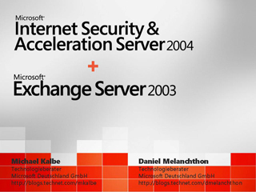
Speaker(s): Daniel Melanchthon, Michael Kalbe
Microsoft Operations Manager 2005
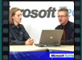
Speaker(s): Sandra C. Schäfer, Michael Korp
Small Business Server 2003
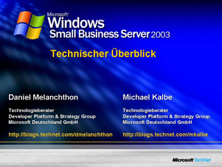
Speaker(s): Daniel Melanchthon, Michael Kalbe
Security Talk: Über Microsoft Security Portfolio
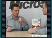
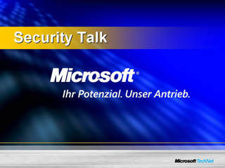
Speaker(s): Michael Kalbe, Arno Edelmann
Sichere drahtlose Netzwerke
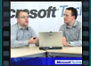
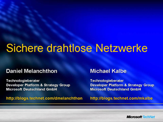
Speaker(s): Daniel Melanchthon, Michael Kalbe
Das Microsoft System Center: Der Systems Management Server 2003
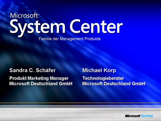
Speaker(s): Sandra C. Schäfer, Michael Korp
Windows Server 2003: Marktüberblick und technische Einführung
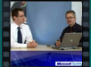
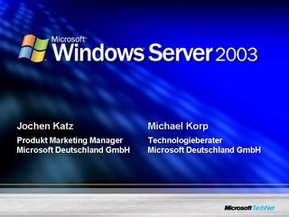
Speaker(s): Jochen Katz,Michael Korp
Geschäftskritische Applikationen mit SQL Server 2005 als Datenbankserver
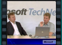
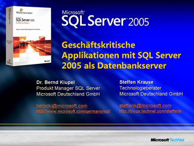
Speaker(s): Dr. Bernd Kiupel, Steffen Krause
Business Intelligence mit Microsoft
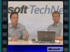
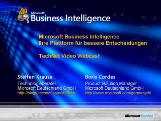
Speaker(s): Steffen Krause, Boris Cordes
Überblick über Microsoft Office SharePoint Server 2007
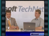
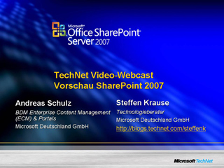
Speaker(s): Andreas Schulz, Steffen Krause